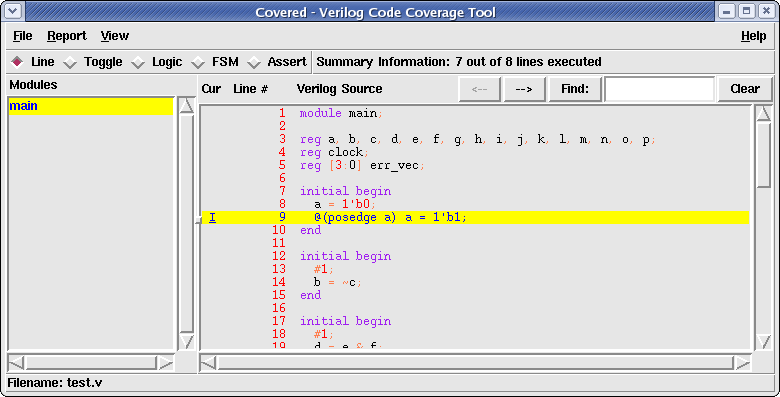
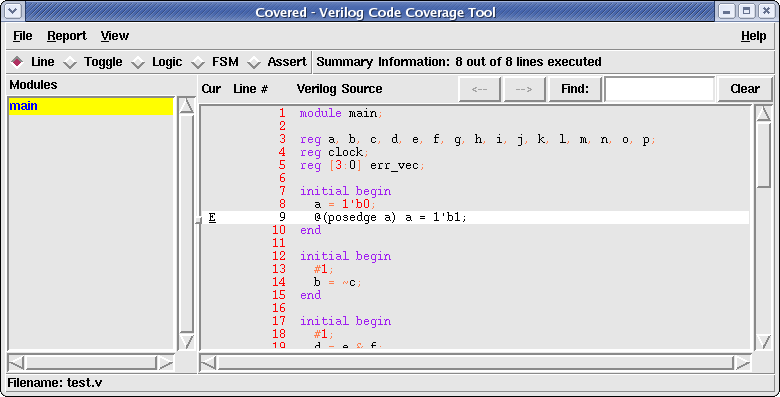

Line coverage is the quickest way to determine what logic in your design is being exercised and which logic has not be exercised during simulation. If a line was found to not be simulated, this is an indication that there was some event that did not occur or did not occur at the proper time to cause a previous conditional expression to be evaluated to true or false. For example, if a block of code looked something like:
| Line | Logic |
|---|---|
| 1 | always @(posedge clock) |
| 2 | if( a ) |
| 3 | b <= 1'b0; |
| 4 | else |
| 5 | b <= 1'b1; |
If line 3 was shown to be not covered, this would indicate that at the positive edge of the term "clock", the value of "a" never evaluated to a value of 1 (true). To make line 3 become covered, we would need to setup a situation in the diagnostic that caused "a" to become true at the positive edge of the term "clock".
On the other hand, if all lines 2 - 5 were found to be uncovered, this would indicate the the term "clock" never made a transition from some value to a 1 (true) value during simulation.
To view line coverage for all uncovered lines for a specific module/instance, do the following:
Once the selected module/instance has been displayed, scroll down in the Coverage File Viewer window (using the scroll bars to the right and below the Coverage File Viewer window) until you have reached a line that is highlighted in the uncovered color scheme. The line number of the highlighted line will be printed to the left of the source code line. This line represents a line that was found to not be hit during the simulation of this module/instance.
Any uncovered line in the design may be included/excluded from coverage consideration. To the left of each uncovered line is an underlined I (line is included in coverage) or E (line is excluded in coverage). Clicking on this character will change the coverage exclusion property of the line by recalculating the summary line coverage information, redisplaying it in the Main Window Summary Bar, changing the background color of the line from the uncovered background color to the covered background color, and changing the leftmost character of the line to the opposite value to indicate its current status. Figure 1 shows an uncovered line that is included for coverage consideration. Figure 2 shows the same line which is now excluded from coverage consideration.
Figure 1. Example of uncovered line included for line coverage consideration
Figure 2. Example of uncovered line excluded for line coverage consideration
In addition to changing the line coverage information, the combinational logic coverage information for an uncovered statement on that line will also be implicitly excluded from coverage (though the exclude properties for each subexpression of the statement will not change).
If the user excludes any line in the design, the "Save CDD..." option in the File Menu will be enabled. This allows the user to save the excluded property either back to the CDD file (or to a newly named CDD file). Doing so will allow the user to load the CDD file at a different time and retain the knowledge of which lines have been excluded/included for coverage. Additionally, if a saved CDD file with coverage exclusion is merged with another CDD file, the excluded line information is preserved for the resulting merged CDD file.
To view line coverage for all covered lines for a specific module/instance, do the following:
Once the selected module/instance has been displayed, scroll down in the Coverage File Viewer window (using the scroll bars to the right and below the Coverage File Viewer window) until you have reached a line that is highlighted in the covered color scheme. The line number of the highlighted line will be printed to the left of the source code line. This line represents a line that was found to be hit during the simulation of this module/instance.
You may see both the covered and uncovered line coverage simultaneously by selecting both the "Show Uncovered" and "Show Covered" items in the Report menu. This is sometimes useful to see what logic Covered was not able to provide coverage support for (all lines which contain code that are not highlighted in either the uncovered or covered color schemes).